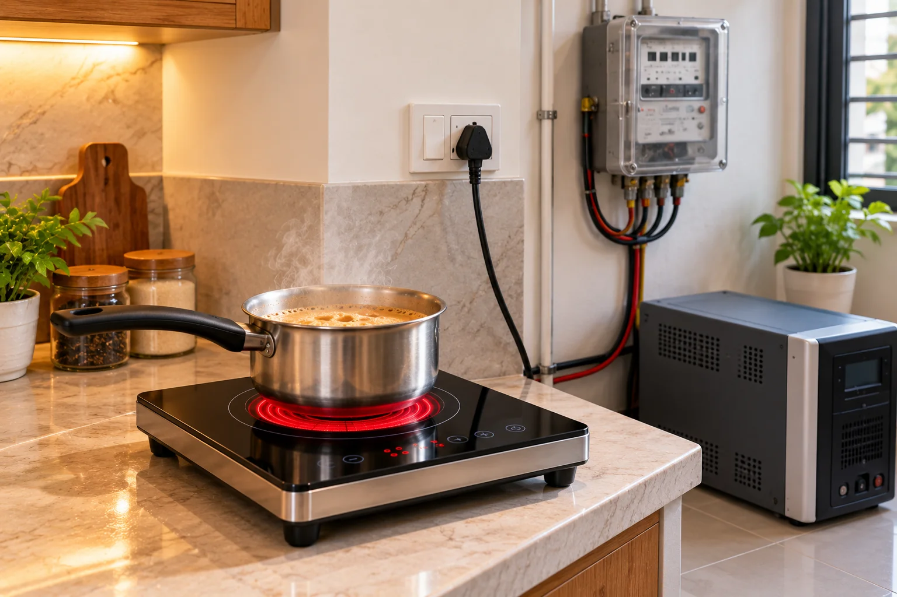
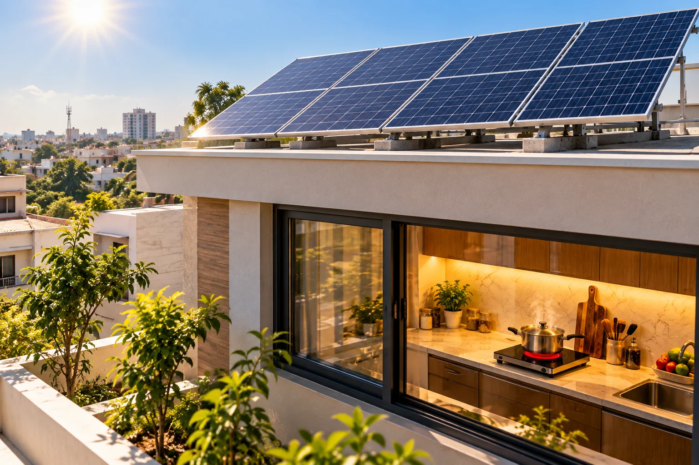

Electric Stove Wattage & Electricity Cost in Pakistan
Quick answer: Most home electric stoves in Pakistan are 2000–2200W; commercial hot plates are 2500–2700W. A 2200W stove uses up to 2.2 units per hour at full power, and about 1.5 units per hour in normal cooking because the thermostat cycles. Formula: units = watts ÷ 1000 × hours.

Image slot — upload images/electric-stove-wattage-and-electricity-cost-hero-1.webp
Image slot — upload images/electric-stove-wattage-and-electricity-cost-hero-2.webpElectric stove wattage by model
| Model | Wattage | Max units / hour | Typical units / hour |
|---|---|---|---|
| Hot Glow-912 | 2200W | 2.2 | ≈1.5 |
| Hot Glow-B120 | 2200W | 2.2 | ≈1.5 |
| Hot Glow-920 (dual) | 2200W dual mode | 2.2 | ≈1.5 per burner |
| GG-Cook King-12 | 2700W | 2.7 | depends on setting |
Monthly electric stove bill — worked example
A family cooks 2 hours a day: 1.5 units × 2 hours × 30 days = 90 units a month. Multiply by your per-unit rate on your bill (it depends on your DISCO — K-Electric, LESCO, IESCO, PESCO, MEPCO — and your slab). Glam Gas quotes roughly Rs 60–70 per cooking hour at current rates.
Tip: adding 90 units can push you into a higher slab. Families on net metering or solar can cook in daylight for close to zero cost.
Electric stove burner size and wattage
Higher wattage means faster boiling and better searing. 2200W is enough for roti, salan, rice and pressure-cooker meals; 2700W is for wok tossing and large commercial degchis.
Glam Gas Hot Glow-B120 Infrared Cooker
 Image slot — upload images/wattage-hot-glow-b120-1.webp
Image slot — upload images/wattage-hot-glow-b120-1.webp Image slot — upload images/wattage-hot-glow-b120-2.webp
Image slot — upload images/wattage-hot-glow-b120-2.webpRs 19,110 Rs 27,300 (glamgas.com, checked 2026-09-28)
2200W with a six-blade cooling fan so long, slow cooking (haleem, nihari, paye) doesn't overheat the electronics.
- Type: Single-burner infrared cooker — built-in or tabletop
- Power: 2200W
- Pot load: 18–20 kg
- Electricity: ≈1.5 units/hour (brand figure)
- Best for: Families who want a marble-top built-in look without a gas line
- Warranty: 1 year on electrical parts (glass/body damage not covered)
Glam Gas GG-Cook King-12 Commercial Electric Hot Plate
 Image slot — upload images/wattage-gg-cook-king-12-1.webp
Image slot — upload images/wattage-gg-cook-king-12-1.webp Image slot — upload images/wattage-gg-cook-king-12-2.webp
Image slot — upload images/wattage-gg-cook-king-12-2.webpRs 43,200 Rs 48,000 (glamgas.com, checked 2026-09-28)
2700W with power/temperature control lets you run lower settings for simmering and cut consumption.
- Type: Heavy-duty commercial electric hot plate with digital display & timer
- Power: 2700W
- Pot load: Large woks & heavy pots
- Electricity: Up to 2.7 units/hour at full power
- Best for: Restaurants, dhabas, caterers, heavy wok cooking
- Warranty: 1 year on electrical parts (glass/body damage not covered)
Inverter and solar sizing
- Inverter rating should exceed stove wattage plus everything else running — plan 3 kW+ for a 2200W stove.
- On solar, 2200W needs roughly 4–5 panels of 550W in good sun just for the stove.
- Use a dedicated 15A socket and 7/29 or 2.5 mm² wiring.
Next: compare stove types in infrared vs induction vs hot plate or see the electric stove price list.
Frequently Asked Questions
How many watts does an electric stove use?
Home electric stoves in Pakistan are usually 2000–2200W; commercial hot plates 2500–2700W.
How many units does a 2200W stove use in one hour?
Up to 2.2 units at full power; about 1.5 units in normal cooking as the thermostat cycles.
How much will an electric stove add to my bill?
Cooking 2 hours a day at about 1.5 units/hour adds roughly 90 units a month; multiply by your tariff per unit.
Can I run an electric stove on solar?
Yes. Cook during daylight; a 2200W stove needs around 4–5 panels of 550W in good sun, plus an inverter of 3 kW or more.
What wire size do I need for an electric stove?
Use a dedicated 15A socket with 2.5 mm² (7/29) copper wiring.